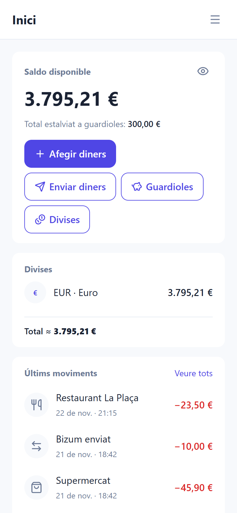
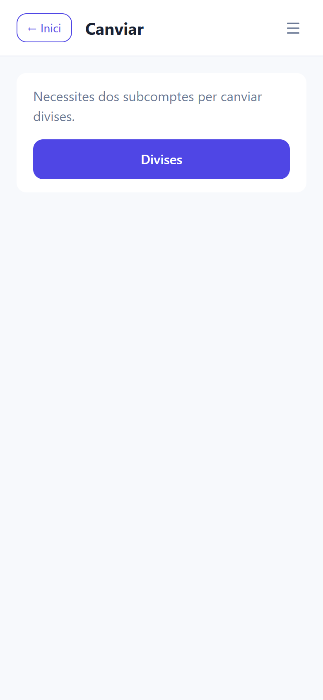
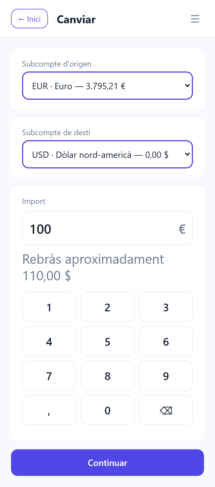
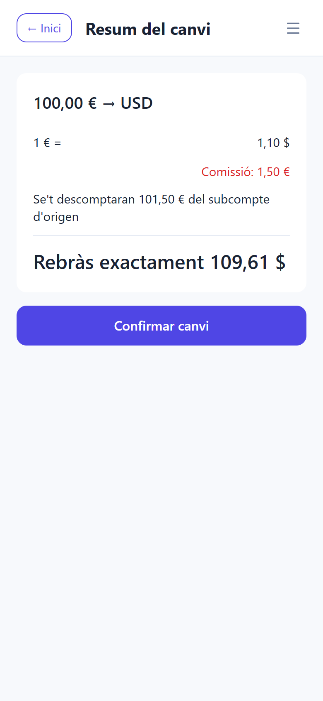
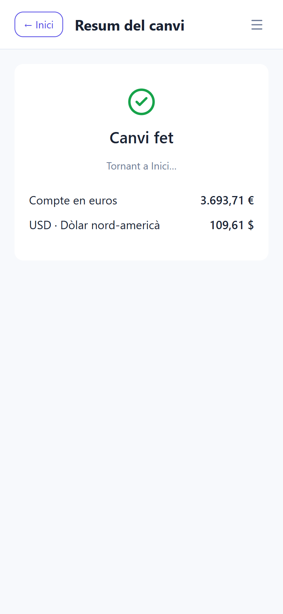
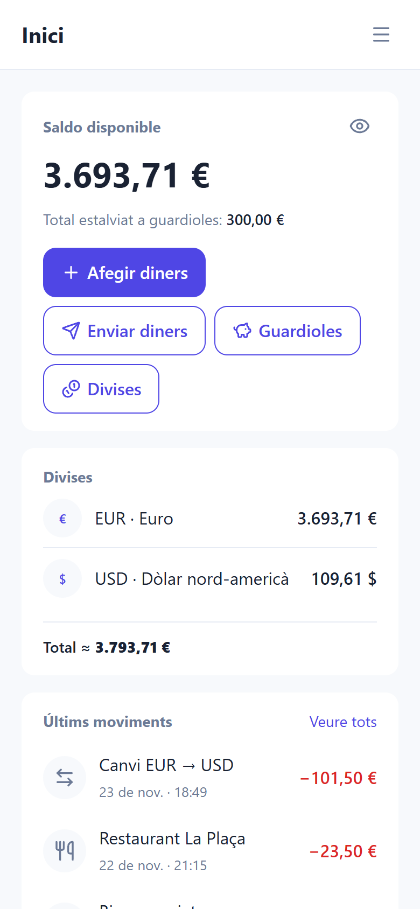
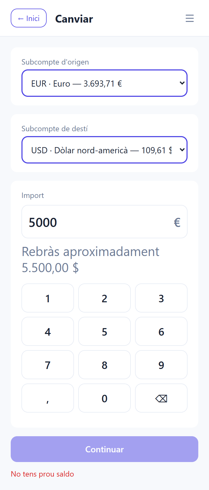
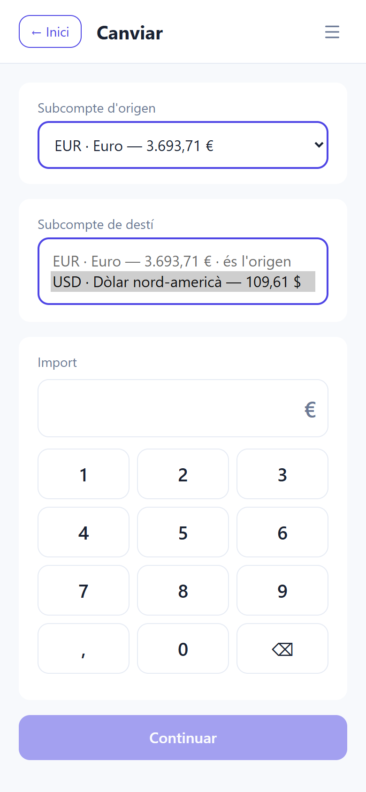
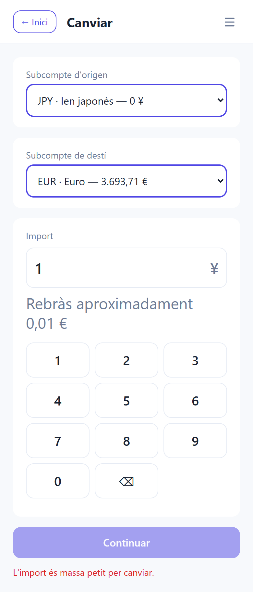

El botó «Divises» porta a «Canviar».

«Necessites dos subcomptes per canviar divises.».

Origen EUR, destí USD, 100 € i «Rebràs aproximadament».

Tipus, comissió en vermell, càrrec i «Rebràs exactament».

«Canvi fet» i els dos saldos nous.

EUR i USD nous, total i «Canvi EUR → USD» a moviments.

«No tens prou saldo» sota «Continuar».

L'origen surt en gris amb «· és l'origen» i no es pot triar.

«L'import és massa petit per canviar.» i «Continuar» desactivat.
